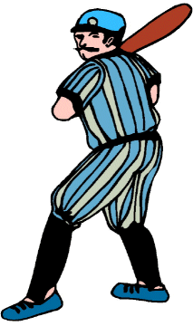
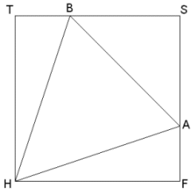

|  |
Howard Jones is an unusual baseball player, the kind referred to as a "slugger." When batting, he has the uncanny habit of either striking out, flying out, or hitting a home run. That's right - no singles, doubles, or triples, just home runs. But he hits lots of those. That's how he earned the nickname "Homer."
When Homer hit his record-breaking 75th home run, he did a strange thing as he rounded the bases. After running exactly one-third of the way, he stopped a moment and made an "X" in the dirt. Then he continued running another one-third of the distance, stopping again to make another "X" in the base path. He finished his trip, crossing home plate amid the shouts of an excited crowd in the stadium. This diagram shows A and B as the two spots that he marked:
 Notice that points A and B form a nice triangle with point H (home plate). The task is to find the area of triangle HAB.
It is often said that there is more than one way to solve a problem. So, to receive credit, you must demonstrate two different methods for finding this area. (Actually, there are several ways, 5 at the least, to do this.)
There was a problem in the MATH FORUM's Middle School PoW about running around the baseball diamond: Baseball Trivia - posted September 11, 2000. Reviewing it might help in solving this problem.
This problem, Homer Jones, also appears in the AlgPoW section of the Math Forum.
| Comments? Send e-mail. | Back to top | Go back to Home Page | Go back to Contents |